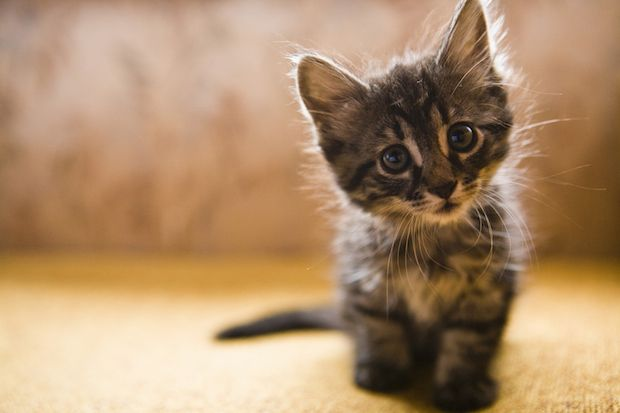
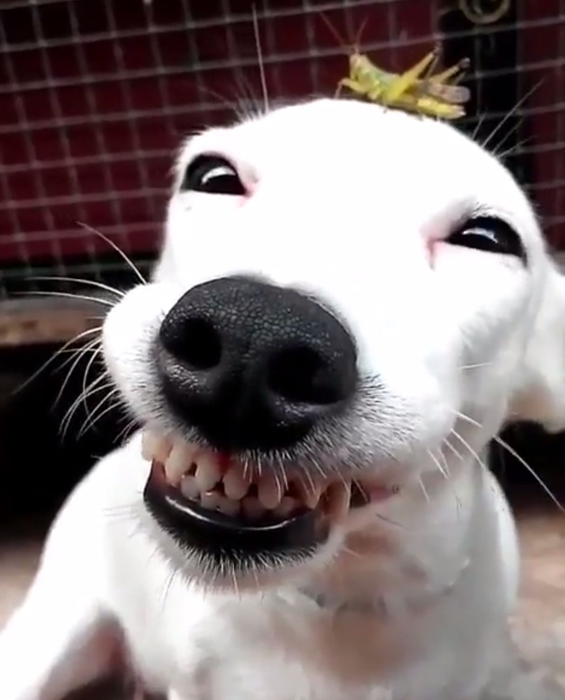

Nasi mieszkańcy

Bruno
Wesoły pies, który uwielbia spacery i zabawę. Ma 3 lata i szuka aktywnego właściciela.

Luna
Spokojna kotka, która kocha drzemki i przytulanie.

Max
Bardzo przyjazny pies, dobrze dogaduje się z dziećmi i innymi zwierzętami.